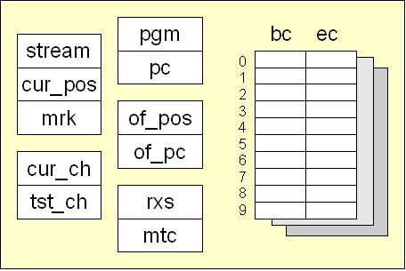

DFA AsmYRX can transfor DFA processor unit(dpu)The component that executes a DFA is structured as a CPU. It has registers and a set of low level instructionsRegisters
|


| home | docs | files | ||
| 30 May 2007 - Remo Dentato | ||
|
||
|
|
||